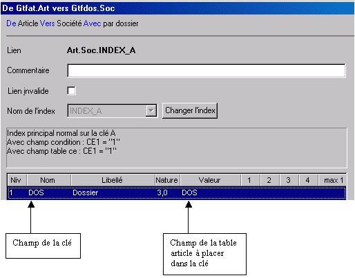

L’éditeur de liens de Xwin, permet de définir des liens entre les différentes tables. Les tables peuvent appartenir au dictionnaire en cours d’édition ou à d’autres dictionnaires.
Un lien décrit la méthode pour accéder à une table B depuis une table A.
Pour définir un lien entre deux tables A et B, il faut
connaître l’index à utiliser pour accéder à la table B,
définir quelles sont les champs de A pour composer la clé d’accès à B. Cette opération s’appelle le remplissage de la clé.
Exemple :
Depuis la table Article, pour accéder à la table Société, il faut utiliser l’index INDEX_A de la table société en utilisant la donnée DOS de la table Article pour composer la clé.

Hiérarchie
Lors de l’édition des liens d’un dictionnaire, la hiérarchie est la suivante :
Dictionnaire
Fichier
Table
Sortants
Entrants
Exemple :
Schémas
Les liens peuvent être visualisés sous forme graphique à l’aide des schémas. Un schéma est constitué d’une sélection de tables et de liens que vous désirez voir. Les liens peuvent être ajoutés en tirant simplement un trait entre deux tables.
Exemple

Qui utilise les liens ?
Les liens sont utilisés par le driver ODBC. Ils permettent d’optimiser les requêtes utilisant plusieurs tables. Rappelons qu’une requête SQL sur plusieurs tables liées par la condition Where fonctionnera toujours, même si les liens entre les tables ne sont pas définis dans le dictionnaire. La différence sera dans les temps de réponse : si un lien est défini entre deux tables, la recherche est instantanée ; dans le cas contraire, le driver ODBC effectue le produit cartésien des deux tables, ce qui peut prendre un temps considérable.
Les liens sont également utilisés par le générateur de Zoom. Ils permettent de générer automatiquement l’appel d’un Zoom de Zoom.
Conditions préalables
La gestion des liens s’appuie sur la définition des index. Pour que la gestion des liens puisse fonctionner correctement, il est indispensable que les index soient préalablement définis.
L’éditeur de liens peut générer automatiquement les liens à partir des tables et des index. Si votre dictionnaire contient des champs de même nom qui n’ont pas toujours la même signification, utilisez les alias pour que des liens inexacts ne soient pas créés. Voir la remarque sur les alias.